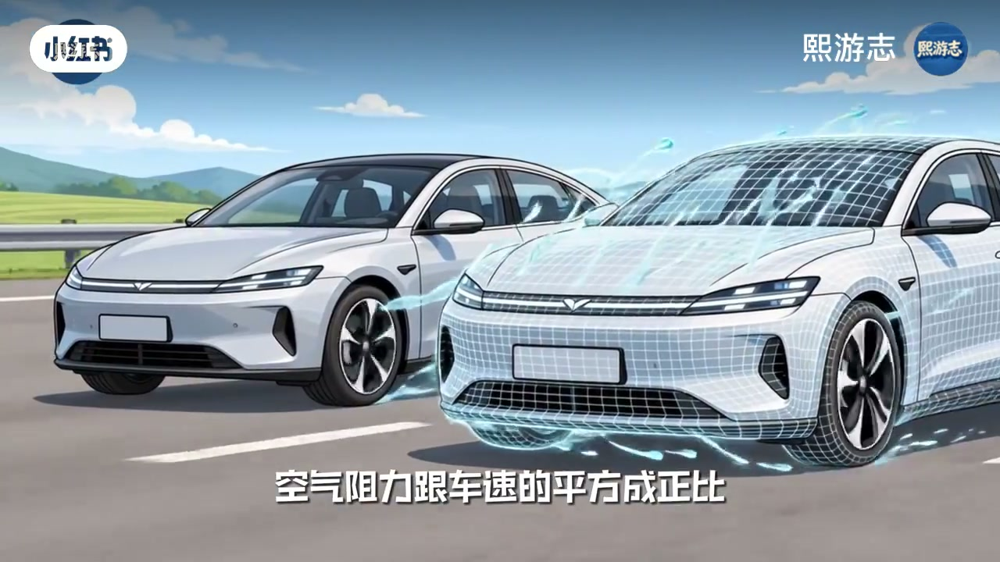
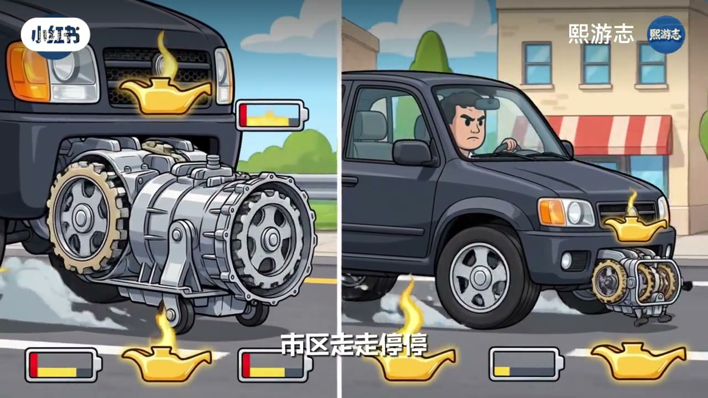
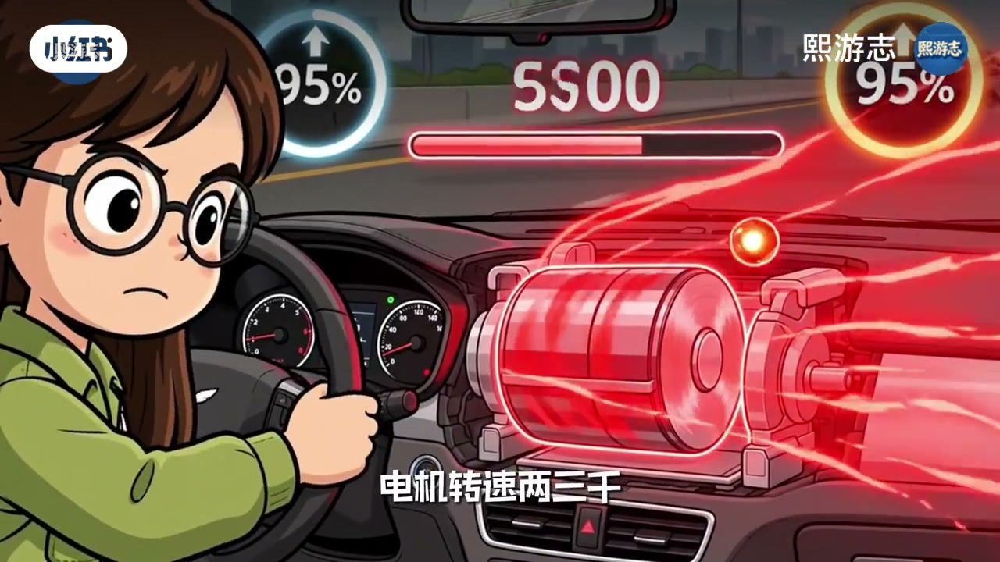
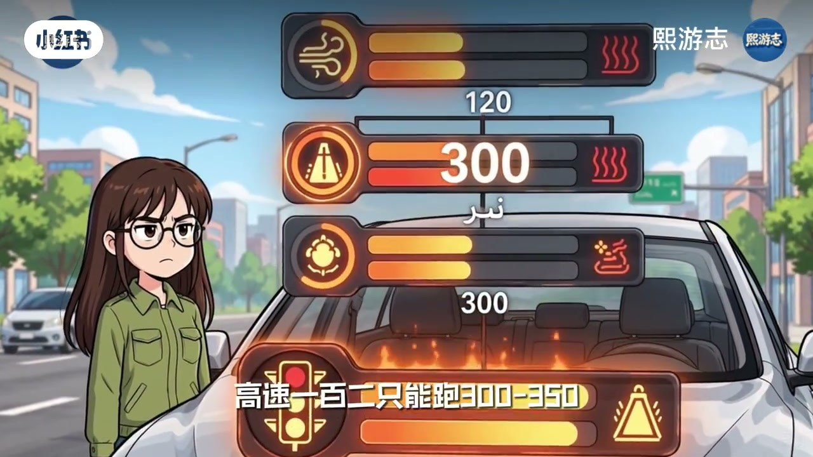
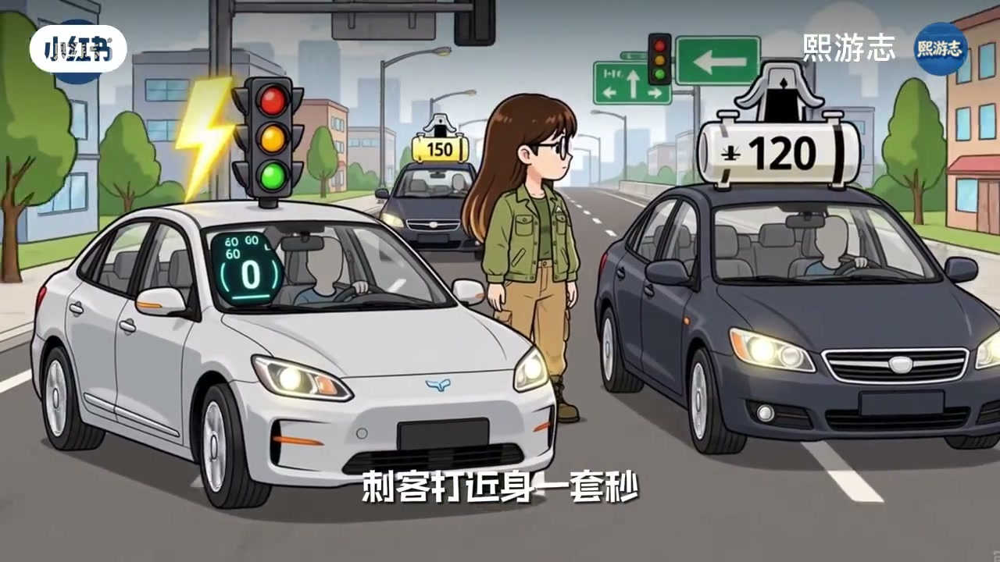

内容要点
知识结构
[00:00→00:30]
现象反差
市区秒天秒地，高速续航大幅打折。
[00:30→02:00]
高速工况
讲解高速风阻与能耗上升为何更伤电车续航。
[02:00→03:07]
对比收束
高速场景油车相对更从容；电车要按工况重新估计里程。
总结
电车优势在城市工况；高速高恒速下能耗结构变化，续航不能按市区体感外推。
图文实录
市区猛、高速慌
00:00 – 00:30
开场金句式对比：市区起步强，一上高速标称六百可能只撑三百，电掉得很快。
为什么电车市区起步秒天秒地
一上高速就捏了标称续航六百跑一百只能撑三百

[00:16]开场：市区强、高速续航打折
Opening: strong in the city, range collapses on highway
高速为何更伤电
00:30 – 02:00
中段展开高速行驶的阻力与能耗逻辑（以画面讲解为主）：恒定高速时电驱优势变小，风阻功率上升更明显影响续航。

[00:47]高速工况：能耗结构发生变化
Highway regime: energy-use structure changes

[01:18]风阻上升：电耗被迅速推高
Rising drag quickly pushes electricity use up
[01:49]标称与实测：高速里程要重新估计
Rated vs real: re-estimate highway range
和油车怎么比
02:00 – 03:07
收束到使用场景：城市通勤电车体感好；长途高速要按更保守的续航规划，不能用市区体感硬套。

[02:20]场景对比：城市与高速各有强弱
Scene contrast: city and highway favor different powertrains

[02:51]收束：按工况估续航，而不是只看标称
Close: estimate range by regime, not the sticker number